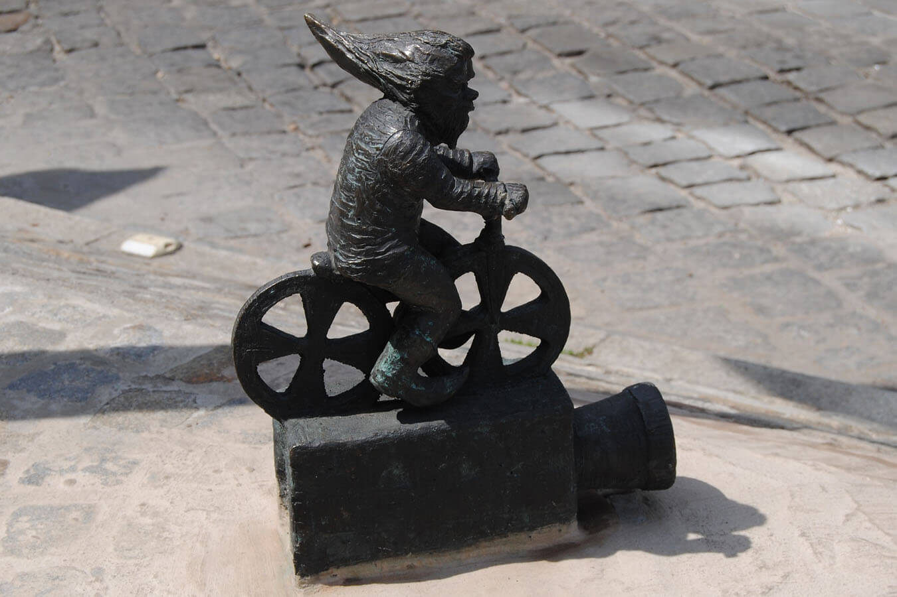
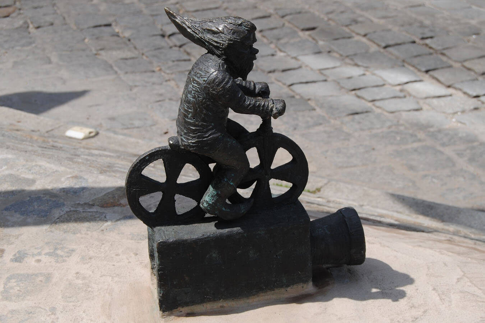

About the city
Wrocław (pronounced VRAWTS-WAHF; also known as Breslau, its German name, and English name until 1945) is the largest city in Lower Silesia in Poland. It is home to 630,000 people within the city limits and the metropolitan area has a population of 1.2 million making it the largest city in Western Poland.
Wrocław, the capital of Lower Silesia, is one of the oldest and most beautiful cities in Poland. Located at the foot of the Sudetes, on the Odra River, crossed by its numerous tributaries and canals, it is a unique city of 12 islands and over a hundred bridges. The rich and turbulent history of the city is embedded in its walls.
The times of the early Middle Ages are remembered by Ostrów Tumski, where one of the most beautiful complexes of sacred architecture has been preserved in excellent condition. Another relic from this period is the Wrocław Town Hall is one of the most magnificent Gothic buildings in Central Europe. In Wrocław, you can also see one of the largest baroque interiors in Poland that has survived to our times. It is Aula Leopoldina located in the 18th-century building of the University.
Wrocław is the greenest city in Poland - there is 25 m2 of greenery per inhabitant (not counting the green areas in housing estates).
 
